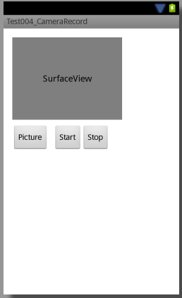

В этом уроке:
- делаем снимок
- пишем видео
На прошлом уроке мы очень подробно рассмотрели как правильно выводить изображение с камеры на экран. Теперь узнаем, как это изображение можно сохранить и как фото и как видео.
Фото делается совсем просто, одним методом. А записать видео нам поможет MediaRecorder. Напомню, что MediaRecorder мы подробно рассмотрели в Уроке 129.
Чтобы не усложнять урок и пример я не буду здесь заморачиваться с размерами превью и экрана, с поворотами и с описанием работы с камерой. Если нужны подробности – загляните в Урок 132.
Создадим проект:
Project name: P1331_CameraRecord
Build Target: Android 4.0
Application name: CameraRecord
Package name: ru.startandroid.develop.p1331camerarecord
Create Activity: MainActivity
В strings.xml добавим строки:
<string name="take_picture">Picture</string>
<string name="start_record">Start</string>
<string name="stop_record">Stop</string>
Экран main.xml:
<?xml version="1.0" encoding="utf-8"?>
<RelativeLayout
xmlns:android="http://schemas.android.com/apk/res/android"
xmlns:tools="http://schemas.android.com/tools"
android:layout_width="match_parent"
android:layout_height="match_parent"
android:paddingBottom="@dimen/activity_vertical_margin"
android:paddingLeft="@dimen/activity_horizontal_margin"
android:paddingRight="@dimen/activity_horizontal_margin"
android:paddingTop="@dimen/activity_vertical_margin"
tools:context=".MainActivity">
<SurfaceView
android:id="@+id/surfaceView"
android:layout_width="200dp"
android:layout_height="150dp"
android:layout_alignParentLeft="true"
android:layout_alignParentTop="true">
</SurfaceView>
<Button
android:id="@+id/btnTakePicture"
android:layout_width="wrap_content"
android:layout_height="wrap_content"
android:layout_alignParentLeft="true"
android:layout_below="@id/surfaceView"
android:layout_marginRight="10dp"
android:layout_marginTop="10dp"
android:onClick="onClickPicture"
android:text="@string/take_picture">
</Button>
<Button
android:id="@+id/btnStartRecord"
android:layout_width="wrap_content"
android:layout_height="wrap_content"
android:layout_alignTop="@id/btnTakePicture"
android:layout_toRightOf="@id/btnTakePicture"
android:onClick="onClickStartRecord"
android:text="@string/start_record">
</Button>
<Button
android:id="@+id/btnStopRecord"
android:layout_width="wrap_content"
android:layout_height="wrap_content"
android:layout_alignTop="@id/btnStartRecord"
android:layout_toRightOf="@id/btnStartRecord"
android:onClick="onClickStopRecord"
android:text="@string/stop_record">
</Button>
</RelativeLayout>На экране у нас SurfaceView и три кнопки: сделать фото, начать запись, остановить запись.

В манифест пропишем разрешения:
<uses-permission android:name="android.permission.CAMERA"/>
<uses-permission android:name="android.permission.RECORD_AUDIO"/>
<uses-permission android:name="android.permission.WRITE_EXTERNAL_STORAGE"/>
Это работа с камерой, запись звука и запись на sd-карту.
MainActivity.java:
package ru.startandroid.develop.p1331camerarecord;
import java.io.File;
import java.io.FileOutputStream;
import android.app.Activity;
import android.hardware.Camera;
import android.hardware.Camera.PictureCallback;
import android.media.CamcorderProfile;
import android.media.MediaRecorder;
import android.os.Bundle;
import android.os.Environment;
import android.view.SurfaceHolder;
import android.view.SurfaceView;
import android.view.View;
public class MainActivity extends Activity {
SurfaceView surfaceView;
Camera camera;
MediaRecorder mediaRecorder;
File photoFile;
File videoFile;
@Override
protected void onCreate(Bundle savedInstanceState) {
super.onCreate(savedInstanceState);
setContentView(R.layout.main);
File pictures = Environment
.getExternalStoragePublicDirectory(Environment.DIRECTORY_PICTURES);
photoFile = new File(pictures, "myphoto.jpg");
videoFile = new File(pictures, "myvideo.3gp");
surfaceView = (SurfaceView) findViewById(R.id.surfaceView);
SurfaceHolder holder = surfaceView.getHolder();
holder.addCallback(new SurfaceHolder.Callback() {
@Override
public void surfaceCreated(SurfaceHolder holder) {
try {
camera.setPreviewDisplay(holder);
camera.startPreview();
} catch (Exception e) {
e.printStackTrace();
}
}
@Override
public void surfaceChanged(SurfaceHolder holder, int format,
int width, int height) {
}
@Override
public void surfaceDestroyed(SurfaceHolder holder) {
}
});
}
@Override
protected void onResume() {
super.onResume();
camera = Camera.open();
}
@Override
protected void onPause() {
super.onPause();
releaseMediaRecorder();
if (camera != null)
camera.release();
camera = null;
}
public void onClickPicture(View view) {
camera.takePicture(null, null, new PictureCallback() {
@Override
public void onPictureTaken(byte[] data, Camera camera) {
try {
FileOutputStream fos = new FileOutputStream(photoFile);
fos.write(data);
fos.close();
} catch (Exception e) {
e.printStackTrace();
}
}
});
}
public void onClickStartRecord(View view) {
if (prepareVideoRecorder()) {
mediaRecorder.start();
} else {
releaseMediaRecorder();
}
}
public void onClickStopRecord(View view) {
if (mediaRecorder != null) {
mediaRecorder.stop();
releaseMediaRecorder();
}
}
private boolean prepareVideoRecorder() {
camera.unlock();
mediaRecorder = new MediaRecorder();
mediaRecorder.setCamera(camera);
mediaRecorder.setAudioSource(MediaRecorder.AudioSource.CAMCORDER);
mediaRecorder.setVideoSource(MediaRecorder.VideoSource.CAMERA);
mediaRecorder.setProfile(CamcorderProfile
.get(CamcorderProfile.QUALITY_HIGH));
mediaRecorder.setOutputFile(videoFile.getAbsolutePath());
mediaRecorder.setPreviewDisplay(surfaceView.getHolder().getSurface());
try {
mediaRecorder.prepare();
} catch (Exception e) {
e.printStackTrace();
releaseMediaRecorder();
return false;
}
return true;
}
private void releaseMediaRecorder() {
if (mediaRecorder != null) {
mediaRecorder.reset();
mediaRecorder.release();
mediaRecorder = null;
camera.lock();
}
}
}Смотрим код
В onCreate мы создаем пути для фото и видео файлов, в которые будет сохраняться результат. Далее определяем SurfaceView, Holder и callback к нему.
В onResume получаем доступ к камере.
В onPause освобождаем ресурсы MediaRecorder и камеры.
onClickPicture – это обработчик нажатия на кнопку Picture. Здесь будем делать снимок. Для этого нам необходимо вызвать метод takePicture. Этот метод асинхронный, для получения результата используются callback-и. Их три.
Первый, ShutterCallback, сработает сразу после того, как камера сделает снимок. Сюда можно повесить звук затвора, например. Я его не использую, передаю null.
Второй, PictureCallback, вернет нам сырую raw картинку. Я его также не использую, передаю null.
Третий, PictureCallback, вернет нам готовую сжатую jpeg картинку. Это нам и надо. Создаем callback и в его методе onPictureTaken будем получать byte-массив. Это и есть готовое фото, которое мы пишем в файл.
onClickStartRecord – обработчик нажатия на кнопку Start. Здесь будем включать запись видео с камеры. Для этого подготавливаем MediaRecorder в методе prepareVideoRecorder. Метод вернет нам значение Boolean, по которому мы поймем удалось ли подготовить объект. Если он готов, стартуем запись методом start. Если при подготовке возникли проблемы, то освобождаем ресурсы.
onClickStopRecord – обработчик кнопки Stop. Здесь останавливаем запись видео методом stop и освобождаем ресурсы. Кстати, в документацие к методу stop написано, что он может выдавать RuntimeException, если что-то не так с аудио/видео, которое дали MediaRecorder-у на вход. Имеет смысл эту ошибку ловить и удалять в таком случае записываемый файл, т.к. там будут некорректные данные.
prepareVideoRecorder – метод подготовки MediaRecorder к записи. Сначала методом unlock снимаем монопольный доступ с камеры, чтобы MediaRecorder мог ее использовать. Затем создаем объект MediaRecorder. Далее идут 6 методов его настройки:
setCamera – предоставляем камеру, которая будет использована для записи
setAudioSource: указываем источник звука – CAMCORDER
setVideoSource: указываем источник видео – CAMERA
setProfile: указываем профиль записи. В профиле содержаться такие данные как: тип контейнера, аудио/видео кодек, битрейт и пр. Чтобы нам руками не задавать все эти характеристики, используем профили. Список профилей можно посмотреть в документацие к объекту CamcorderProfile. Мы используем высокое качество - QUALITY_HIGH.
setOutputFile: указываем путь к файлу, куда будет записано видео
setPreviewDisplay: указываем surface для показа превью в процессе записи. Если ранее вы для камеры уже указали surface в ее методе setPreviewDisplay, то этот метод вызывать необязательно.
Документация очень рекомендует вызывать эти 6 методов именно в таком порядке, иначе грозит ошибками и неудачей при записи.
Когда все параметры указали, вызываем prepare и если все ок, то получаем MediaRecorder готовый к записи.
В методе releaseMediaRecorder освобождаем ресурсы MediaRecorder и снова монополизируем камеру методом lock.
Можно все сохранить и запускать. По нажатию на кнопку Picture будет сохраняться фото, а по кнопкам Start и Stop – стартовать и останавливаться запись видео. Полученные фото и видео будут сохранены в папке Pictures под именами myphoto.jpg и myvideo.3gp